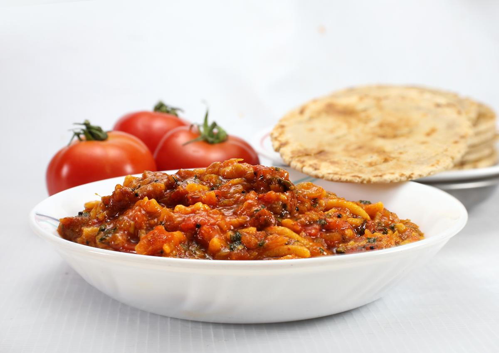

સેવ ટામેટા નું શાક

વર્ણન
- પૂર્વ તૈયારીનો સમય: 10 મિનિટ
- પકાવવાનો સમય: 25 મિનિટ
- કેટલા લોકો માટે: 4
વાનગી
- સૌપ્રથમ તપેલીમાં તેલ ગરમ મૂકી તેમાં રાઈ,હિંગ,લીમડાનો વઘાર કરી, તેમાં સમારેલા ટામેટાં ઉમેરો.ધીમા
તાપે
સાંતળી,થોડા ચડી જાય પછી પાણી ઉમેરો.
- પાણી થોડીવાર સુધી ઉકાળી ત્યારબાદ તેમાં સેવ ઉમેરો.સેવ ઉમેર્યા પછી ઉકાળવું નહિ,મિક્સ જ કરવું.
- ઉપરથી
કોથમીર નાખી પરાઠા સાથે ગરમ ગરમ પીરસો.